Searching in MTP-EWC
You can use this tool to search in MTP-EWC for:
- Searching target:
- Keyword in apg files.
- Structures defined in apg.
- Searching scopes:
- All setup files or single setup file.
- Different scopes.
Make sure that the Search window as shown below has been opened.
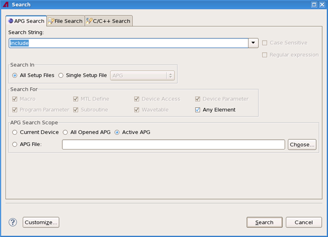
Search page configuration
On the APG Search tab, you can search keywords and scopes, search in all setup files or a single setup file, and search for structures.
How to search keywords in apg files
On the APG Search tab, enter a keyword in the Search String textbox and click the Search button to search a string corresponding to the keyword.
The following keywords are supported:
- Simply a keyword.
- A sentence in one same line.
- A text in multiple lines.
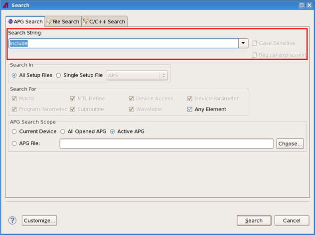
How to search in all setup files or a single setup file
On the Search In pane, you can select All Setup Files or Single Setup File to search one single specific setup file.
- All Setup Files: Search in all setup files included in target apg files.
- Single Setup File: Search in one single specific setup file, for example, prog file or dvac file.
See the following window.
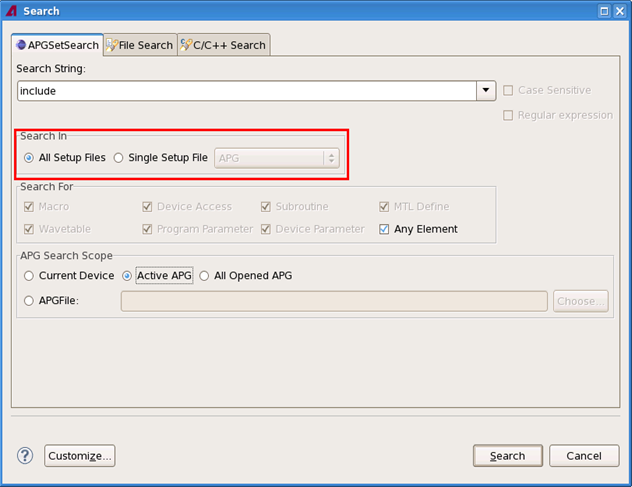
How to search structures defined in apg. files
On the Search For pane, you can search one or more specific structures contained in the apgSet, such as Macros, Device Access, Subroutine, etc.
If you have not selected Any Element, follow these steps to do structures searching.
On the Search In pane, if you have selected All Setup Files, all options on the Search For pane are enabled.
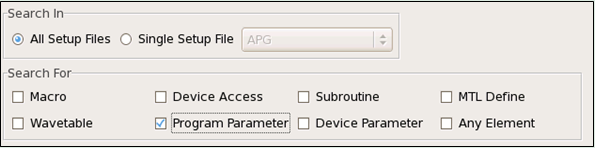
On the Search In pane, if you have selected Single Setup File, only the options for this specific setup file type are enabled.
For example, if you have selected APG from the Single Setup File drop-down menu, only Macro, MTL Define, Program Parameter are enabled in the Search For pane.
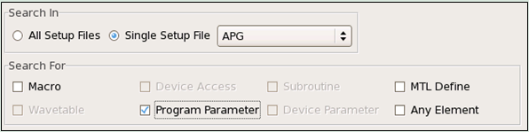
On the Search In pane, if you have selected Device Access from the Single Setup File drop-down menu, only Macro and Device Access are enabled.
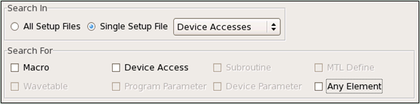
How to search different scopes
On the APG Search Scope pane, you can select Current Device, Active APG, All Opened APG or an APG File to search.
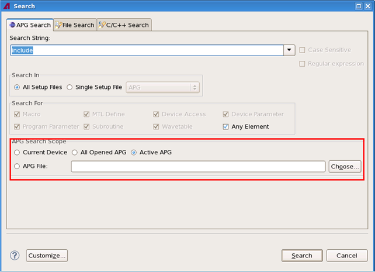
- Current Device: Search all apg files in the current device.
- Active APG: Search the active apg file in the EWC
editor.Note If the active editor is not APGMultipageEditor, the Active APG button is disabled.
- All Opened APG: Search all the apg files which have been opened with APGMultipageEditor in the SmarTest editor.
- APG File: Click Choose to select an apg file to search.
If you have chosen an apg pattern file and click OK, the name of this selected apg file will appear in the APG File textbox, then the APG Search Scope will appear as follows:
Search result page configuration
When you click the Search button, the search result will appear in the search result view in the device tree structure. And then you can navigate in the search result.
The following figure shows that different results under one same setup file.
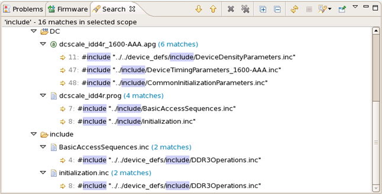
For the following special case, ff multiple same search result items are under one file in the search tree viewer, this means this file is included within many target apg files.
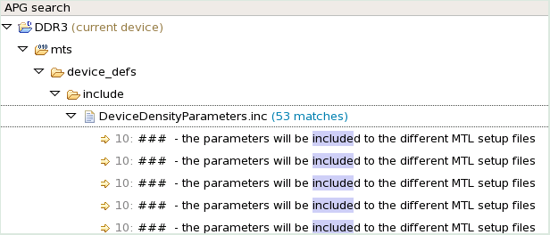
Search result navigation
When you double click an item in the search result view, the reference apg file which contains the keyword is automatically opened in the multi page editor and jumps to the reference line. The key words are highlighted with green color.
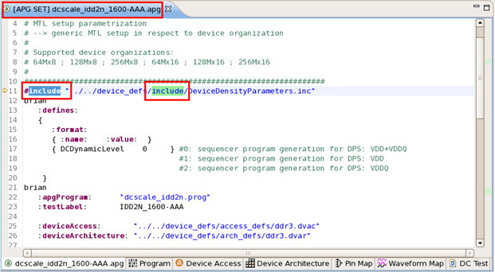
Search result item right-click menu
You can right-click any search result item to pop up a shortcut menu as shown below.
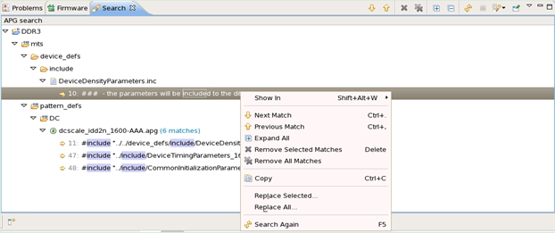
Functional changes
- Introduced in MTP 3.3.3